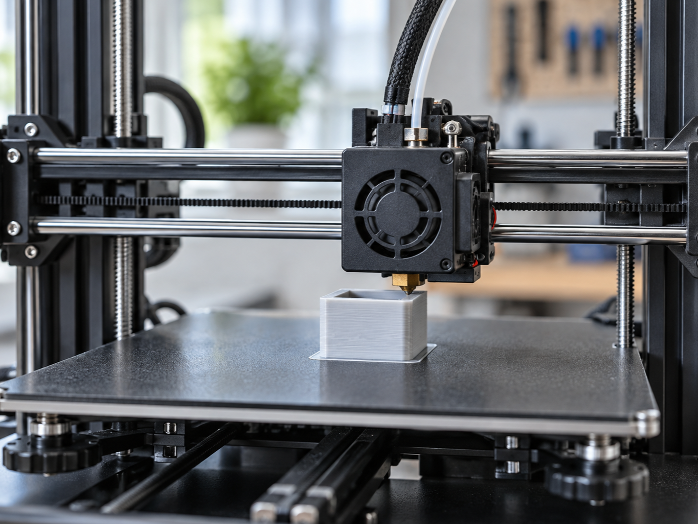
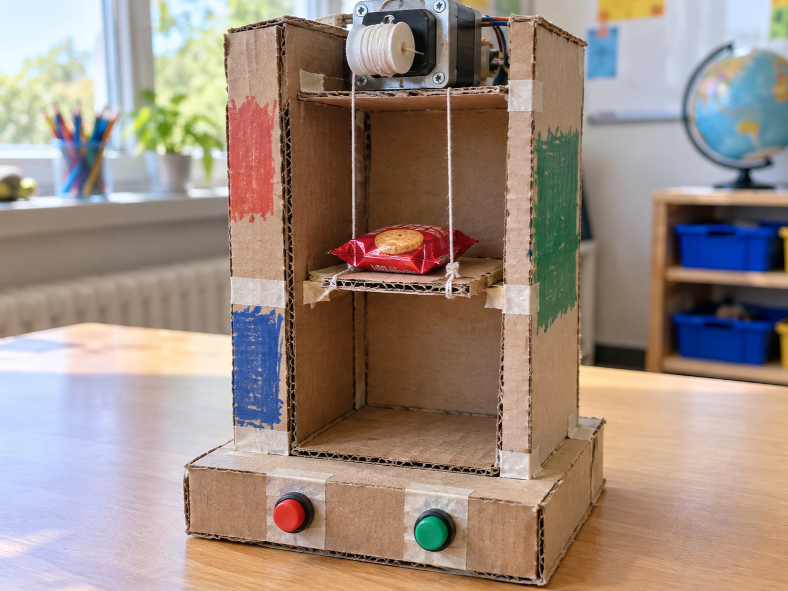

3D printer positioning
DetectRead next print position
DecideCalculate required steps
DoMove the print head
A stepper motor turns in small, repeatable steps instead of spinning freely.
Energising its coils in sequence moves the shaft one step at a time and holds its position.
The ULN2003 board supplies the coil current for the common 28BYJ-48 motor shown here.


from gpiozero import OutputDevice
from time import sleep
coils = [OutputDevice(pin) for pin in (22, 27, 17, 4)]
sequence = ((1, 0, 0, 0), (0, 1, 0, 0),
(0, 0, 1, 0), (0, 0, 0, 1))
for pattern in sequence:
for coil, value in zip(coils, pattern):
coil.value = value
sleep(0.002)from picozero import Stepper
motor = Stepper((16, 17, 18, 19))
motor.step(100)